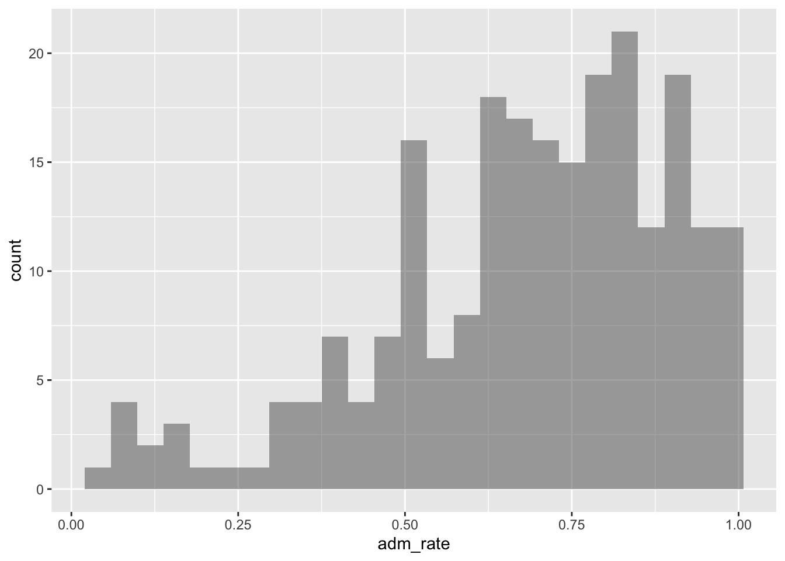
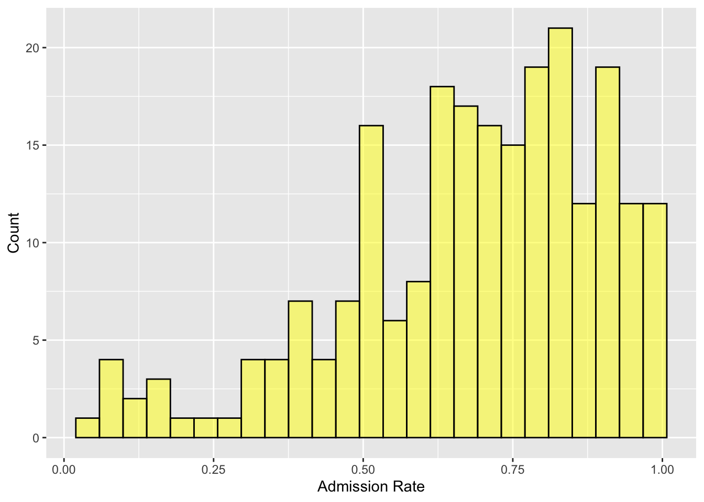
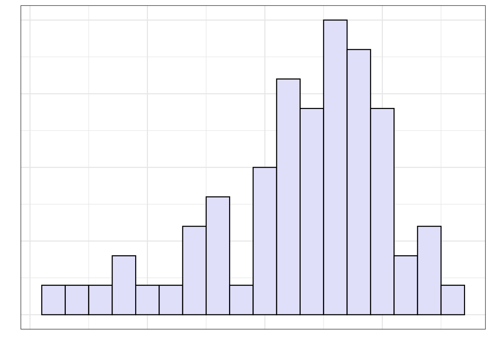
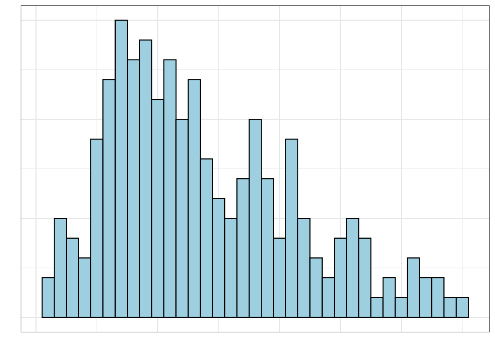
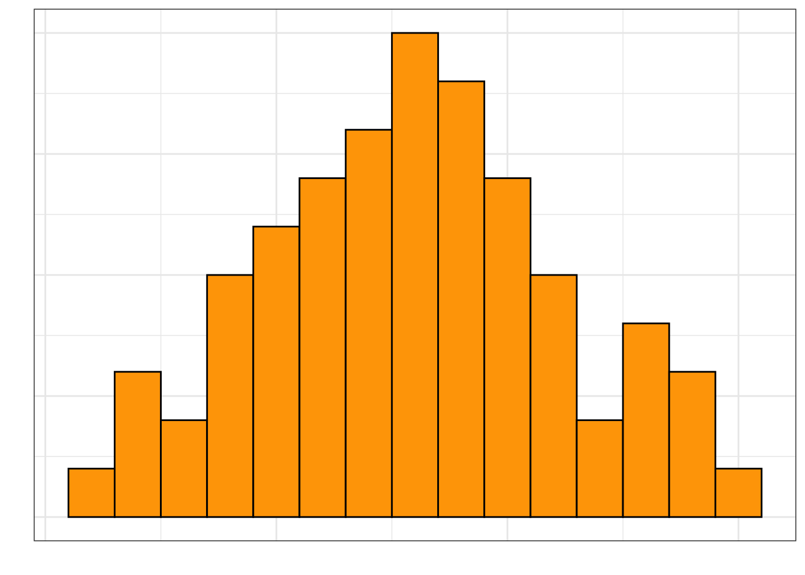
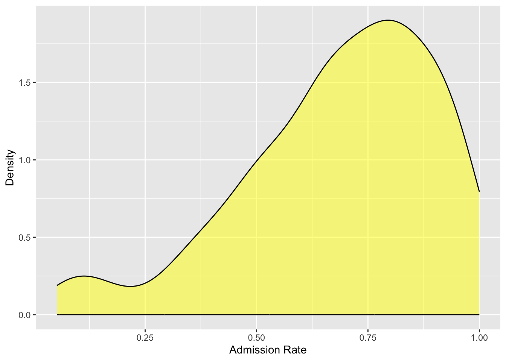
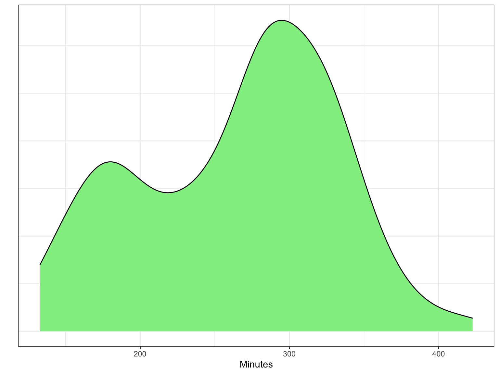
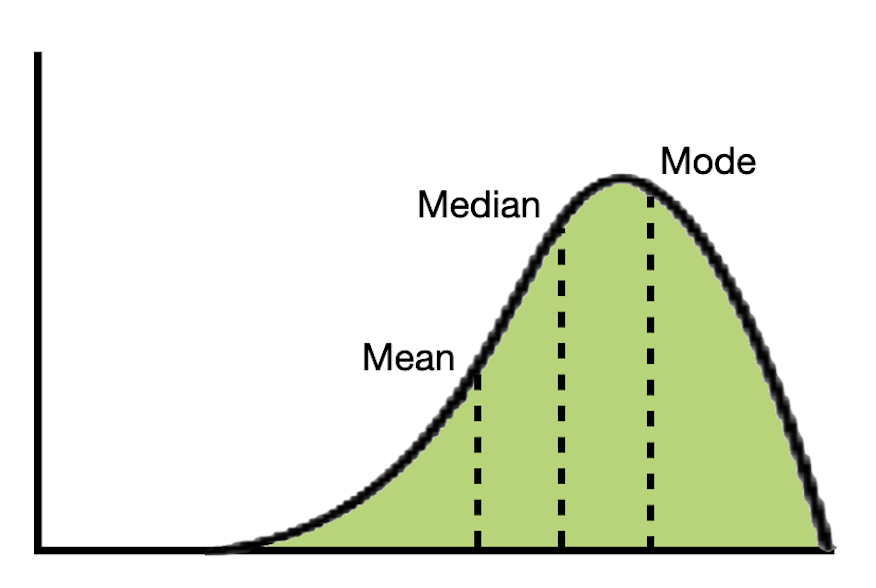
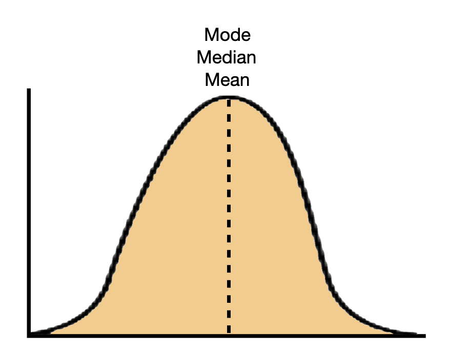
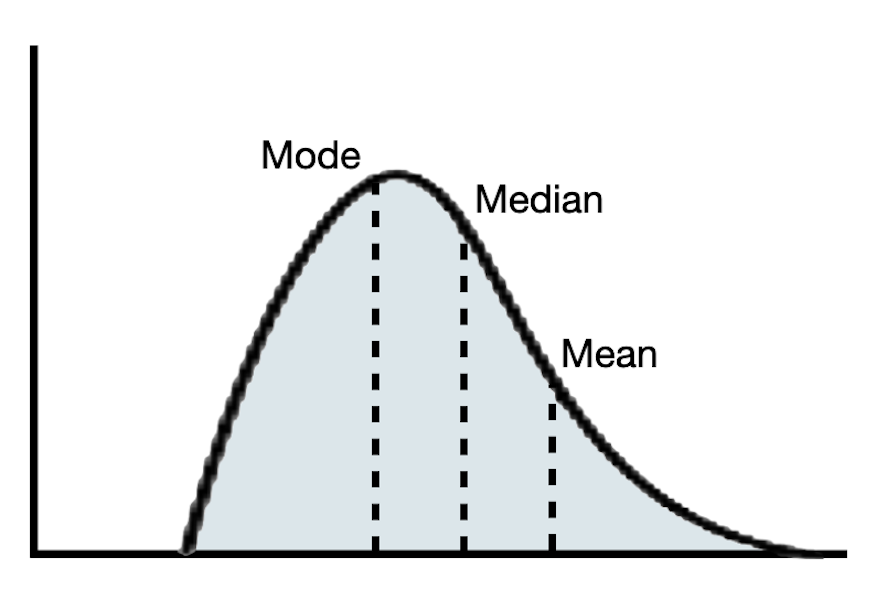

library(ggformula)
library(mosaicCore)
library(tidyverse)
# Import data
colleges <- read_csv("https://raw.githubusercontent.com/zief0002/epsy-5261/main/data/college-scorecard.csv")
# View data
colleges6 Summarizing and Visualizing Quantitative Attributes
This chapter will focus on the visualization and numerical summarization of quantitative attributes.
6.1 Importing the Data
To illustrate how we can summarize and visualize quantitative attributes using R, we will again use the college-scorecard.csv data. As a reminder, we will start by loading three libraries, {tidyverse}, {ggformula}, and {mosaicCore}. Then we will import the college scorecard data using the read_csv() function and assign the data into an object called colleges. Finally, we view the data to make sure it read in properly.
Recall that in these data each case in these data is an institution of higher education and there are 234 institutions in our sample. This dataset has several quantitative attributes, including: admission rate, number of undergraduate students, median debt for all students, median debt for graduates, and median earnings.
6.2 Histograms
The first visualization we will examine is a histogram. We can create a histogram of the admission rates using the gf_histogram() function.1 This function takes the same general syntax as the gf_ functions you learned about in Chapter 5:
- The first argument is a formula using the tilde operator (
~) that identifies the attribute to be plotted, and - The second argument,
data =, specifies the data object that was assigned on data import.
The syntax used to create a histogram of the admission rates is:
gf_histogram(~ adm_rate, data = colleges)
6.2.1 Interpretting Histograms
Histograms are created by collapsing the data into bins and then counting the number of observations that fall into each bin. To show this more clearly in the figure created previously, we can color the bin lines to highlight the different bins. To do this we include an additional argument, color =, in the gf_histogram() function. We can also set the color for the bins themselves using the fill = argument. Here we color the bin lines black and set the bin color to yellow.2
gf_histogram(
~ adm_rate, data = colleges,
color = "black",
fill = "yellow",
xlab = "Admission Rate",
ylab = "Count"
)
Each bar in a histogram represents indicates the number of cases with a range of values for the plotted variable. For example, the bar that is just to the right of 0.50, shows there are approximately 16 institutions of higher learning with admissions rates between about 0.50 and 0.54. Similar interpretations can be made for all of the other bars as well.
One common assumption made with a histogram is that the width of each bar covers the same range over the attribute plotted. In this histogram, there are 25 total bars, which means that the range of each is 0.04 on the admission rate scale (i.e., 25 * .04 = 1.00 which is the rtange of the entire attribute).
Your Turn
Interpret the bar that is immediately to the left of 1.00.
6.2.2 Describing the Distribution
Rather than focusing on any one bin, we typically want to describe the distribution of the attribute plotted as a whole. For example, it appears as though most institutions admit a high proportion of applicants since the bins to the right of 0.50 have higher counts than the bins that are below 0.50. (In fact, the highest bins seem to be above 0.75.) There are a few institutions, however, that are quite selective, admitting fewer than 25% of the students who apply.
Statistically we would say that the distribution of admission rates is left-skewed. A left skewed distribution has the majority of cases on the right side of the distribution (i.e., at higher values of the attribute). In contrast, a distribution that has the majority of cases on the left side of the distribution (i.e., at lower values of the attribute) is called right-skewed. Figure 6.3 shows examples of both a left-skewed and right-skewed distribution.


The skewness of a distribution describes a characteristic that we refer to as the shape of the distribution. Some distributions are not skewed, these distributions have a symmetric shape. Figure 6.4 shows an example of a symmetric distribution.

6.3 Density plots
Another plot that is sometimes more useful for determining the shape of the distribution for a quantitative attribute is the density plot. This plot is a smoothed out version of a histogram.
Density plots can be created with the gf_density() function which takes the same arguments as the other gf_ functions. Similar to these function, you can include optional arguments to color the plot and add axis labels.
Figure 6.5 shows the density plot for the density plot for the admissions rate attribute plotted earlier in a histogram.
gf_density(
~ adm_rate, data = colleges,
color = "black",
fill = "yellow",
xlab = "Admission Rate",
ylab = "Density"
)
Based on the density plot, we can see that the shape of the distribution of admission rates is left-skewed.
The metric on the y-axis in a density plot is no longer counts, it is “probability density”, or just “density”. We don’t interpret those values, but rather focus on the relative height of the curve. That is, areas of the density curve that are higher indicate more data in those areas of the attribute of interest. Places where the density curve is lower indicates areas where data occur infrequently. Density plots are interpreted similarly to a histogram in that
Our interpretation of the distribution of admission rates remains that most institutions of higher learning admit a high proportion of applicants. In fact, colleges that admit around 75% of their applicants have the highest probability density, indicating this is where most of the institutions are found in the distribution. Additionally, there are just a few institutions that are have an admission rate 25% or less.
6.3.1 More about Shape
In addition to the overall symmetry or direction of skewness, another aspect of shape that we should describe is the number of modes in the distribution. The distributions we have looked as so far have been unimodal, that is, they have a single mode or “hump” in the distribution.
Other distributions have multiple modes. For example, the distribution in Figure 6.6 is bimodal (it has two modes). If a distribution has more than one mode, it often indicates that there are different groups that have been mixed into the data. For example, in Figure 6.6 we see one mode around 180 minutes (3 hours) and another taller mode around 300 minutes (5 hours). This might indicate that there are two different groups of runners that competed in the Legacy Marathon—one smaller group that was faster (e.g., elite runners) and one larger group that was slower.

6.3.2 Center and Variation: Two Additional Characteristics to Describe
In addition to the describing the shape of the distribution, there are two other characteristics of a quantitative distribution that we want to describe: the center and the variation.
The “center” of a distribution is misleading in that it doesn’t literally mean the center of the distribution. What it really means is “typical value”. In the distribution of admission rates presented in Figure 6.5, a typical admission rate might be around 0.75. This value is at the mode in the distribution.
We also need to describe the variation in the distribution. When estimating the variation from a density plot we typically describe the overall range of values, as well as, the range of values within which most of the data falls. In the distribution of admission rates presented in Figure 6.5, there are admission rates between 0 and 1, but most of the institutions of higher learning have an admission rate between 0.65 and 0.85. This could also be given as a range of values around the typical value—\(0.75 \pm 0.10\)
A full description of a quantitative distribution includes shape, center, and variation. Here is how we might descirbe the distribution of admission rates presented in Figure 6.5:
The distribution of admission rates is left-skewed. Most institutions admit a high proportion of applicants. A typical institution in the distribution admits around 75% of its applicants (\(\pm\) 10%). There are, however, a few institutions that are quite selective, admitting fewer than 25% of the students who apply.
In a multi-modal distribution, the identification of center and variation is more difficult, since there are multiple typical values. For example, in the distribution of marathon times presented in Figure 6.6, there are two typical values, one around 180 minutes and another around 300 minutes. Similarly, in describing the variation we often describe a range of values around each typical value that depicts where most of the data fall. From Figure 6.6, most of the faster runners finished the Legacy Marathon between 160 and 190 minutes, whereas most of the slower runners finished with a time between 200 and 400 minutes.
Your Turn
Create a density plot for the distribution of median earnings for students. Add appropriate labels to the axes.
Describe the shape, center, and variation of this distribution and what it tells you about students’ median earnings 10 years after being enrolled in college.
6.4 Numerically Summaries
In the previous examples, we estimated the typical value (center) and variation from a visualization of the distribution. If the distribution is unimodal, we can also obtain more precise values for these characteristics by computing different numerical summaries.3
6.4.1 Learn More
In this class we will focus on the computation of these values using R and their interpretations rather than on the mathematical manipulation and formulas. Here are some links to learn more about the underlying calculations of the measures that we will focus on in this class if you are interested: mean, median, and mode, range interquartile range (IQR), standard deviation.
In describing the center of the distribution, we estimated the typical value based on the value for the “modal hump” in the density plot. There are two numerical values that are often computed to summarize the center of the distribution: the mean and the median.
In a perfectly symmetric distributions, the mean and median are the same value. In practice, they are rarely exactly the same. If the distribution is roughly symmetric, these values should be similar. In skewed distributions, the mean and median will be different. In these distributions, the mean will be further in the tail of the distribution than the median. Comparing the mean and median is another way to verify the symmetry or asymmetry of the distribution.



In a symmetric distribution, any of the three center values (mean, median, or mode) are a good summarization of a typical value since they are all roughly the same. In skewed distributions, because the mean is further in the tail, it is often not a good reflection of a typical value in the distribution. Instead, the median or mode is often a better summary in these distributions.
6.4.2 Computing Numerical Summaries in R
To compute numerical summary values, including the mean and median, we use the df_stats() function from the {mosaicCore} package. This function takes the exact same arguments as the gf_ functions. The syntax below shows how to compute numerical summaries for the admissions rate attribute.
# Compute numerical summaries
df_stats(~adm_rate, data = colleges)The mean, or average, of the 230 institutions’ admission rates is 0.68 and the median admission rate for these institutions is 0.72. The slightly lower mean value is consistent with how the mean and median compare in a left-skew distribution. Because the distribution is skewed the median of 0.68, or modal value of 0.75, is a better indication of a typical admission rate.
Your Turn
Compute the mean and median for the distribution of students’ median earnings 10 years after being enrolled in college
Based on the distribution of students’ median earnings 10 years after being enrolled in college is the mean or median a better summary of a typical value in the distribution? Explain.
6.4.3 Numerically Summarizing Variation
There are several summary measures that statisticians use to summarize the variation in a quantitative distribution. In this class we will focus on three of these measures: the range, the standard deviation, and the interquartile range (IQR).
- The range is the difference between the maximum and minimum values in the distribution.
- The standard deviation is measure of how far, on average, values in the distribution are from the mean.
- The interquartile ranger (IQR) is the range of the middle 50% of the distribution.
To illustrate how to compute these values, we will again use df_stats() to compute the summaries for the admission rate attribute.
# Compute numerical summaries
df_stats(~adm_rate, data = colleges)The range of the distribution is \(1 - 0.0519 = 0.9481\). Note that the range is a single value. Alternatively, we can say the admission rates range from 0.0519 to 1. This summary indicates the overall variation in the attribute.
The standard deviation is computed and returned in the sd column of the df_stats() output. The standard deviation of the admission rates is 0.217. Interpreting this, we would say that on average, most admission rates are within .216 of the mean. That is, most admission rates are between 0.47 and 0.90. To compute this range:
\[
\begin{split}
&\mathrm{Mean} \pm \mathrm{SD}\\[2ex]
&0.683 - 0.217 = 0.47 \\[2ex]
&0.47 + 0.217 = 0.90
\end{split}
\] The last summary measure of variation we will compute is the IQR. The IQR is the difference between the 75th-percentile value (Q3) and the 25th-percentile value (Q1). In the admission rates attribute this is:
\[ \begin{split} \mathrm{IQR} &= 0.840975 - 0.5597 \\[2ex] &= 0.281 \end{split} \]
That is the middle 50% of the admission rates have a range of 0.281—they range from 0.56 to 0.84.
Your Turn
Compute the range, IQR, and standard deviation for the distribution of students’ median earnings 10 years after being enrolled in college.
Based on the distribution of students’ median earnings 10 years after being enrolled in college which summary measure(s) of variation would you report? Explain.
Similar to the numerical summaries for the center of a distribution, some measures of variation are better suited toward summarizing symmetric distributions and others for skewed distributions. For all distributions, the range is typically provided to summarize the overall variation. In addition, for symmetric distributions, the standard deviation is also conventionally used to summarize the variation for most cases. In skewed distributions, the IQR is a better numerical summary of the variation than the standard deviation.
Adding the numerical summaries to our previous description of the distribution of admission rates presented in Figure 6.5:
The distribution of admission rates is left-skewed. There is a great deal of variation in addmission rates, with institutions of higher learning admitting as few as .5% of their applicants, and some as many as 100%. A typical institution in the distribution admits around 72% (median) of its applicants with half admitting between 56% (Q1) and 84% (Q3) of their applicants. This suggests that most institutions admit a high proportion of applicants. There are, however, a few institutions that are quite selective, admitting fewer than 25% of the students who apply.
There is no one correct way to summarize and report the characteristics of a quantitative distribution. You will want to describe the shape, center, and variation, but how you do that may be different from how another person chooses to do that. For example, in the description of the distribution of admission rates I chose to report the characteristics using text/prose. Another researcher might have instead chosen to report this information in a table rather than writing about it. As an applied scientist or researcher you need to be able to do both.
In practice you might try multiple reporting strategies within a paper before you settle on one that is “best” for that paper. Think of it like you do in drafting writing—often your first attempt isn’t the same as the final product, and it may take several iterations to get to that final draft.
6.5 Summary
There are several R functions that are useful for summarizing categorical attributes. Table 6.1 shows the functions (and their descriptions) you will use to summarize and visualize quantitative attributes. Note that they all have very parallel syntax.
| Function | Description |
|---|---|
| Summarize | |
| Visualize | |
When describing a quantitative distribution, there are three characteristics to attend to: shape, center, and variation. These can be estimated from a plot of the distribution, and the center and variation can also be summarized numerically. Often the shape of the distribution dictates which measures are provided in the description of the attribute. Table 6.2 presents a guide for thinking about what should be reported based on the shape of the distribution.
| Example | Shape | Center | Variation |
|---|---|---|---|
This function is part of the
{ggformula}package which needs to be loaded prior to using thegf_histogram()function.↩︎R knows the names of 657 colors. To see these names type
colors()at the command prompt.↩︎If the distribution is multi-modal many of these summaries cannot be computed, and even if they can be computed they are meaningless as summaries of a typical value or variation.↩︎